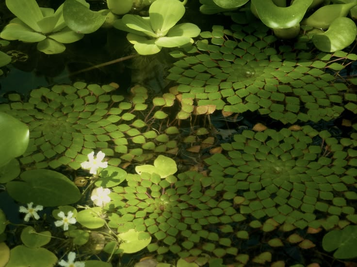
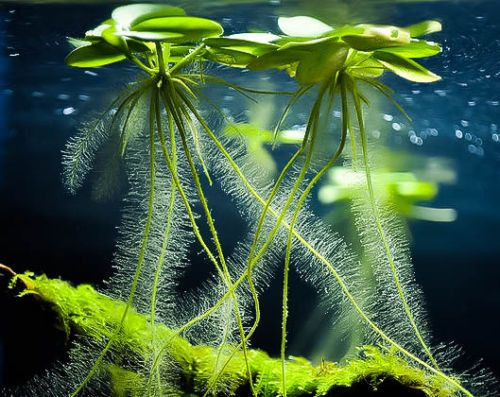

Building a thriving, self-sustaining outdoor guppy pond is an exquisite blend of natural ecology and aquatic artistry. Unlike artificial indoors aquariums reliant on mechanical filters and synthetic lighting, outdoor tubs leverage real sunlight, natural micro-fauna, and botanical balances to unlock maximum fin expression, biological vitality, and peak coloration in high-grade Poecilia reticulata lines.
Whether you are cultivating purebred lines or establishing a low-maintenance patio tub, adhering to foundational outdoor ecosystem principles guarantees pristine water clarity, abundant natural nutrition, and robust thermal resilience. Here are the 10 quintessential rules for setting up a natural outdoor guppy sanctuary.

Ecosystem Architecture & Design
01. Container Selection & Thermal Mass
Choose non-toxic, UV-resistant containers with high thermal inertia. Large terracotta basins, food-grade HDPE dark tubs, or insulated glass-fiber tubs (minimum 15–30 gallons) protect fish from drastic day-to-night temperature swings. Dark interiors enhance natural iridophore color contrast while mimicking natural creek beds.
02. Strategic Solar Positioning
Position your pond where it receives 4 to 6 hours of indirect morning sunlight and shaded afternoon protection. Full full-day direct sun can cause extreme heat spikes and aggressive green water blooms, while morning sun stimulates photosynthesis in live plants and activates crucial carotenoid pigment synthesis in guppies.
03. Botanical Tannin & Humic Conditioning
Incorporate dried Indian Almond leaves (Terminalia catappa), Guava leaves, or alder cones into the substrate. As they decompose naturally, they release beneficial tannins, humic acids, and mild antibacterial compounds that condition soft rainwater, reduce stress, and maintain ideal organic water balance.

04. Heavy Floating Flora Filtration
Floating plants act as the living engine of filterless outdoor ponds. Species such as Salvinia natans, Water Lettuce (Pistia stratiotes), and Amazon Frogbit rapidly consume nitrates and ammonia through their roots. Their dense hanging root networks also create a natural jungle shelter for newborn fry to hide from adults.
05. Natural Mineral Buffering
Rainfall can deplete mineral levels and trigger sudden acidic pH crashes. To counteract soft rainwater acidity, line the bottom or place a small mesh bag containing crushed eggshells, crushed coral, or calcite substrate. This slowly leaches essential calcium and magnesium ions into the water, securing a steady 8–12 dGH for robust fin expansion.
06. Micro-Fauna Cultivation
Before introducing valuable guppy strains, let the setup mature for 10–14 days. Seed the water with cultures of Daphnia magna, copepods, and ostracods. These micro-crustaceans feast on soft algae and bio-film, generating a continuous live food chain that powers juvenile guppy growth and accelerates development naturally.
07. Passive Aeration & Circulation
While natural ponds function without noisy motorized filters, gentle water circulation prevents thermal stratification and surface film accumulation. Utilizing a subtle solar-powered sponge filter or a micro air-stone ensures continuous oxygenation during warm summer nights when aquatic plants consume oxygen.
08. Predator Defense Architecture
Outdoor ecosystems attract natural local predators such as dragonflies (nymphs), birds, and cats. Protect your stock by fitting a fine stainless steel micro-mesh or nylon netting cover securely over top. Inspect plants carefully for dragonfly larvae before introduction to keep your newborn fry safe.
09. Overflows & Monsoon Drainage
Torrential rainfall can cause outdoor tubs to overflow, washing away surface floating plants and fry. Drill fine overflow holes covered with fine stainless steel mesh about 2 inches below the container's top lip to safely vent excess rainwater during heavy storms.
10. Selective Stocking & Genetic Management
Avoid overstocking natural tubs. Maintain a ratio of 1 male to 2-3 females, allowing a population capacity of approximately 1 fish per 1.5–2 gallons of water. Routinely evaluate developing juveniles under natural sunlight to pick out top-tier breeders and protect strain purity over successive generations.
Conclusion
By embracing these 10 biological design principles, you cultivate more than just a fish container; you build an interconnected living botanical sanctuary. The harmony between natural sunlight, floating flora, and mineral balance nurtures resilient, brilliantly colored guppies that thrive with minimal intervention.